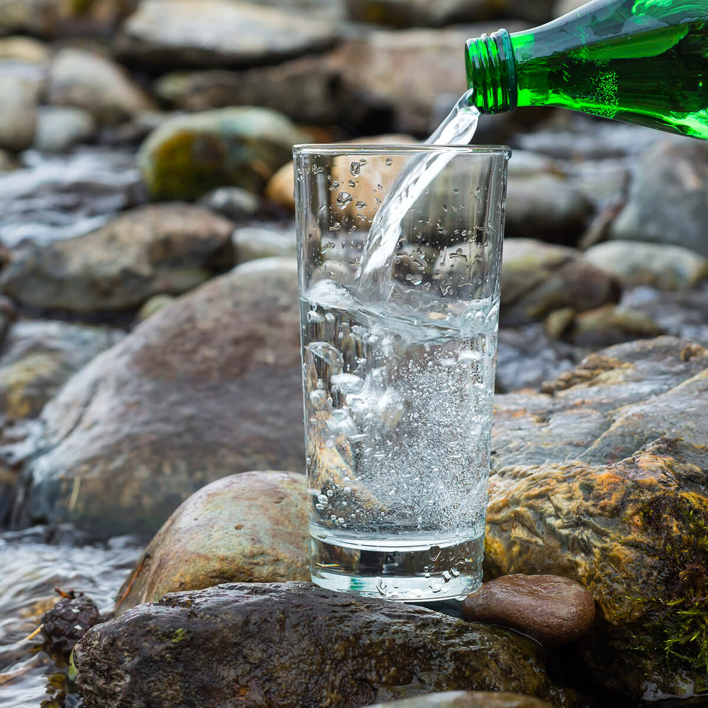

Maden suyu, doğal yeraltı kaynaklarından gelir ve kalsiyum, magnezyum, sodyum gibi temel mineraller içerir. Bu zengin mineral içeriği, sağlığa birçok fayda sağlar. Ancak, minerallerin türleri ve miktarları maden suyunun çıkarıldığı yerlere bağlı olarak değişir, bu nedenle farklı kaynaklardan gelen maden sularının sağlık faydaları da farklılık gösterebilir. Örneğin, kalsiyum ve magnezyum oranı yüksek olan maden sularının sertlik dereceleri artar ve bu da suyun daha acımsı bir tat bırakmasına neden olabilir. Yine de, doğal yeraltı kaynaklarından elde edilen maden sularının genel olarak kemik sağlığını güçlendirdiği, sinir ve kas işlevlerine yardımcı olduğu bilinmektedir.
Doğal Maden Suyunda Yer Alan Mineraller
Maden suyu, yüksek miktarda yeraltı kaynaklarından gelen mineralleri içerir. Maden suyunun çıkarıldığı kaynak ve minerallerin bileşimini, sağlığa olan yararlarını ve lezzetini etkilese de tüm maden suları doğal olarak karbonat sunar. Şişelenme sırasında içine karbondioksit eklense de doğal maden sularına ekstra mineral eklenmez. Sodada ise durum farklıdır
Maden suyu ile soda tat olarak birbirine benzese de içerikleri tamamen farklıdır. Sodada karbondioksit ve karbonat bulunur. Ancak, soda yapay bir içecektir. İçeriğindeki karbonat sebebiyle bazı faydaları olur. Faydaları sebebiyle kontrollü şekilde tüketilebilir ve asitli içeceklere iyi bir alternatif olur. Maden suyu ise sodadan farklı olarak tamamen doğal kaynaklardan elde edilir. Tamamen doğal kaynaklardan elde edildiği için maden suyunda yer alan mineraller sodada bulunmaz. Doğal maden sularında yer alan mineraller aşağıda listelenmiştir.
• Kalsiyum: Hemen hemen tüm maden sularında farklı miktarlarda bulunur. Suyun hem
tadını hem de damakta bıraktığı hissi etkiler.
• Magnezyum: Kalsiyum gibi çoğu maden suyunda bulunsa da bazı yeraltı kaynakları
magnezyum açısından çok zengindir. Bu sebeple, bazı maden sularının magnezyum oranının
diğerlerinden fazla olduğunu görürsünüz. Sudaki fazla magnezyum, tadı kısmen acı hale
getirebilir.
• Sodyum: Maden suyunda sodyum bulunması, tuhaf gibi görünebilir. Bu sodyumun
tüketeni daha fazla susatacağı düşünülebilir. Fakat doğru miktardaki sodyum, sıvı
dengesinin iyileşmesine destek verir.
Maden sularının mineral içeriği bunlarla sınırlı değildir. Yukarıda sayılanlar, her maden suyunda mutlaka bulunan elementlerdir. Bunların dışında kaynağına göre aşağıdaki minerallerden en az birini maden sularında görürsünüz:
• Demir
• Çinko
• Potasyum
• Sülfat
• Klorür
• Florür
• Silikat
Mineral içeriği sebebiyle maden suyu, vücuda en az içme suyu kadar faydalıdır. Ancak, mineral içeriği daha yüksek olsa da maden suyu asidiktir. Asidik yapısı ve içinde yoğun miktarda mineral içermesi nedeniyle içme suyunun yerine maden suyunun sürekli tüketilmesi doğru bir yaklaşım olmaz. Gereğinden fazla tüketilen sodanın faydaları kadar sağlık açısından bazı riskleri de bulunur.
Maden Suyunun Faydaları
Eşsiz mineral içeriği ve organik bileşenleri sayesinde maden suyu vücut için iyi bir kaynaktır. Bu kaynağın en önemli özelliği emile bilirlik oranının yüksek olmasıdır. Yüksek emilebilirliğin nedeni, minerallerin suda iyonik olarak biçimlenmesidir. İyonik biçimlenmesi emilimi kolaylaştırdığı için maden suyu içtiğinizde günlük kalsiyum ve magnezyum ihtiyacınızın bir kısmını alırsınız. Bunun yanı sıra doğal maden suyu faydaları şöyle sıralanabilir:
• Kemiklerin Güçlenmesine Katkı Sağlar: Maden suyunun bu faydası kalsiyum
içeriğinden gelir. Bazı araştırmalar, maden suyundaki kalsiyumun vücut tarafından süt
ürünlerine göre daha iyi şekilde emildiğini göstermiştir. Menopoz öncesindeki bazı
kadınlarda yapılan araştırmalarda ise maden suyu içenlerin normal su içenlere göre daha
yüksek kemik kütlesi yoğunluğuna sahip olduğu gözlenmiştir. Ayrıca, magnezyumda bulunan
bikarbonat ve magnezyum da kemiklerin gelişimine destek veren minerallerdir.
• Kan Basıncını Dengelemeye Destek Verir: Araştırmalar, yetersiz kalsiyum ve
magnezyum düzeylerinin kalp hastalığı için bir risk faktörü olan yüksek tansiyona neden
olabileceğini gösterir. Maden suyu bu iki mineral açısından da zengin olduğu için kan
basıncını desteklemeye destek verir. 2004 yılında yüksek tansiyon, düşük kalsiyum ve
magnezyum seviyeleri olan kişiler üzerine yapılan bir çalışmada maden suyunun etkileri
değerlendirildi. Bu araştırmada dört haftalık sürenin sonunda insanların kan basıncında
önemli düşüşler kaydedildi.
• Sindirime Yardımcı Olur: Özellikle kabızlık probleminde maden suyunda yer alan
magnezyum, bağırsakların emiliminin artmasına destek olur. Böylece sindirimin
rahatlamasına da katkı sağlar.
• Kalp Sağlığına Fayda Sağlayabilir: Magnezyum, kalp sağlığı için oldukça yararlı
bir mineraldir. Araştırmalar, maden suyu içmenin trigliserid ve kötü kolesterol
düzeylerini azaltmaya destek olduğunu gösterdi.
Herkes için olan bu faydalarının yanı sıra maden suyu, sporcular için de oldukça iyi bir
kaynaktır. Sporcuların performansında antrenmanlar kadar beslenme, uyku ve sıvı alımı
önemlidir. Çünkü, sıvı kaybının en önemli nedenlerinden biri terlemektir. Terle birlikte
vücut sıvıya ek olarak, sodyum, kalsiyum, potasyum ve magnezyumu da dışarı atar. Maden
suyu, mineral açısından zengin bir kaynaktan geldiği için egzersiz yaparken vücudun
kaybettiği minerallerin geri kazanımına destek verir.
Normal şartlarda düzenli beslenen ve egzersiz yapan kişilerin 1 saati geçmeyen
antrenmanlarda sıvı alımı için su dışında bir maddeye ihtiyacı olmaz. Ancak 1 saati aşan
egzersizlerde vücudun su ve mineral ihtiyacı artar. Sıvı kaybı sonucunda bitkinlik, ağız
kuruluğu, baş ağrısı ve halsizlik görülebilir. Dolayısıyla hem sporcuların performansı
düşebilir hem de sıvı kaybı, sağlık problemlerinin yaşanmasına neden olabilir.
Sıvı kaybı, kas kramplarının oluşmasına da sebebiyet verebilir. Dolayısıyla maden suları, kas kramplarının azalmasına da katkı sağlayabilir. Özellikle potasyum açısından zengin maden suları, krampların azalmasıyla birlikte kas ve kemiklerin güçlenmesine de katkı sağlar. Bu yönüyle yaralanma olasılığının düşmesine de destek verir. Ayrıca maden suyu faydaları arasında aşağıdakiler de sayılabilir:
Artan sıvı tüketimine ek olarak maden suyunda bulunan magnezyum ve kalsiyum böbrek taşı
oluşumunun azalmasına katkıda bulunabilir.
İçeriğinde yer alan karbonat, hazımsızlığın ve mide gazının giderilmesine yardımcı
olabilir.
İçeriğinde bulunan sülfat, metabolizmanın hızlanmasına destek verebilir.
Maden suyunda yer alan potasyum, daha güçlü bir hafızaya destek olur. Ayrıca, gün boyu
dinç hissettirir.
Mineral içeriği sebebiyle bir anti-inflamatuar olarak vücudu güçlendirebilir.
Doğal olarak oluşan minerallerin bol miktarda bulunması, kendine özgü bir tat sağlar.
Gün içinde tüketilen mineral miktarını artırmanın en kolay kolunu sunar.
Kalorisiz olduğu için kilo vermeye yönelik diyetlerde rahatlıkla tüketilebilir.
Sağlıklı bir içecek olduğundan sıcak günlerde ferahlık hissi verir.
Başta limon olmak üzere birçok meyveyle uyum sağlar. Bu sayede meyvelerle karıştırılarak
birçok alternatif sağlıklı içecek hazırlanabilir.
Tüm bunların yanı sıra maden suyu asitli içecek tüketmek istemeyenler için iyi bir alternatiftir. Meyvelerle karıştırarak damak tadınıza uyan lezzetli içecekler hazırlayabilir, şekerli ve asitli içeceklerde yer alan kaloriyi vücudunuzdan uzak tutabilirsiniz.
Maden Suyu Zayıflatır Mı?
Sağlık açısından faydalı içecekler arasında yer alan maden suyu, kilo verme sürecine
olumlu katkıda bulunur. Düzenli maden suyu tüketimi, sık idrara çıkma yoluyla vücuttaki
fazla yağların ve toksinlerin atılmasını desteklemektedir.
Diyete dâhil edilmesi gereken ve vücuttaki sıvı dengesini korumaya yardımcı olan maden
suyu, özellikle su ihtiyacını karşılamada önemli bir role sahiptir. Kilo vermek isteyen
kişilerin yeterli miktarda su tüketmesi şarttır ve maden suyu bu ihtiyacı karşılayan
sağlıklı bir alternatiftir. Dolayısıyla, sağlıklı bir diyetle kilo vermeyi hedefleyenler
için, diğer içecek seçeneklerine göre maden suyu tüketmek daha çok tavsiye edilir.
Maden Suyu Ne Zaman İçilmeli?
Güvenli bir içecek olduğu için maden suyunu günün her saati tüketebilirsiniz. Özellikle yetişkin insanlar günlük ortalama 2 litre suya ihtiyaç duyar. Su ihtiyacınızın bir kısmını maden suyuyla karşılarsanız hem sıvı kaybını önlemiş hem de mineral almış olursunuz. Fakat tüketim için gün içinde bir saat aralığı organize etmek istiyorsanız, sindirime yardımcı olması için yemeklerden yaklaşık 30 dakika önce tüketebilirsiniz. Eğer tokluk hissi vermesini isterseniz yemekten hemen önce de tüketebilirsiniz ancak maden suyu da içme suyu gibi besinlerden alacağınız sıvıyı seyreltir. Bu sebeple yemekten hemen önce ve sonra tüketilmesi çok fazla önerilmez. Ancak magnezyum içeriği yüksek olan maden suları için durum farklıdır. Yemeklerle birlikte tüketeceğiniz magnezyum açısından zengin maden suyu, bu mineralin emiliminin ve tutulumunun artmasını sağlar. Bu avantajdan yararlanmak için yemeklerle birlikte magnezyum oranı yüksek maden sularını içebilirsiniz.
Geceleri maden suyu içmeyi planlıyorsanız, uyku saatinizden en az iki saat önce tüketmeyi tercih etmelisiniz. Bu sayede maden suyunda yer alan magnezyum daha rahat uyumanıza katkı sağlayacaktır. Aynı zamanda sıvı alımı sebebiyle gece uykunuzun bölünme riski de azalacaktır. Antrenmanlar sırasında sıvı kaybı yaşama ihtimali olan sporcuların ise hem spor sırasında hem de spordan hemen sonra maden suyu içmeleri tavsiye edilir. Ancak şişkinlik hissi yaşamamak için en ideal süreç, antrenmanlardan hemen sonrasıdır. Antrenmanlardan sonra maden suyu tükettiğinizde, sıvı kaybını önleyebilir, elektrolit dengesini sağlayabilirsiniz.
Maden Suyu Ne Kadar Tüketilmeli?
Maden suyu güvenilir bir kaynak olduğu için tüketim için aşırıya kaçmamak kaydıyla belirli bir sınır belirtilemez. Tüm maden sularının içerikleri de birbirinden farklı olduğu için günlük tüketim miktarı belirlemek doğru olmaz. Ancak bazı maden suları, sodyum açısından çok zengindir. Sodyum miktarı sebebiyle özellikle hipertansiyon hastaları tarafından kontrollü tüketilmesi gerekir. Buna ek olarak kontrolsüz şekilde tüketilen maden suyu, aşağıdaki riskleri de beraberinde getirebilir:
• Pet şişelerdeki içecekler, küçük plastik döküntü parçaları olan mikroplastikler
içerir. Mikroplastikler, vücut için bir dizi potansiyel sağlık riski taşır. Özellikle
BPA içeren pet şişeler, yüksek sıcaklıklarda saklandığında veya uzun süre beklediğinde
risk taşıyabilir.
• Seçtiğiniz maden suyunun karbonat oranı yüksekse aşırı tüketimde mide rahatsızlığı,
şişkinlik yaşayabilirsiniz.
• İçme suyu çok tüketildiğinde su zehirlenmesi olarak bilinen bir hastalık görülür. Bu
hastalığın temel nedeni vücuttaki sodyum miktarının seyrelmesidir. Sodyum, hücrelerdeki
suyu düzenlemeye yardımcı olan bir elektrolittir. Çok fazla maden suyu da dengesizliğe
yol açarak hiponatremi yaşatabilir. Bu oldukça nadir görülse de komaya ve nöbetlere
yolabilir.
• Maden suyu, içme suyuna göre daha asidiktir. Çok fazla aside maruz kalan diş minesi
uzun vadede zarar görebilir. Maden suyunun içme suyu ve şekerli içeceklere göre diş
minesini biraz daha fazla aşındırdığını gösteren bir çalışma mevcuttur.
• Hazır meyveli maden suları da satışa sunulan içecekler arasında yer alır. Bunların
çoğu şeker eklenerek hazırlandığı için yüksek kalori içerebilir. Kilo kaybına yönelik
bir diyet uyguluyorsanız, sade ve doğal maden suyunu tüketmeniz önerilir.
Maden suyu oldukça zengin, faydalı ve kaliteli bir içecek olarak karşınıza çıkar. Kalsiyum, sodyum, magnezyum ve potasyum içeriğiyle güçlü kemiklerden beyin sağlığına kadar vücuda birçok katkıda bulunur. Ancak her şeyde olduğu gibi maden suyunda da fazla tüketim zararlı olur. Yine de herhangi bir sağlık sorununuz yoksa bu içeceğe mutlaka hayatınızda yer vermeniz, günlük su ihtiyacınızın bir kısmını da mineral açısından zengin olan bu kaynakla gidermeniz önerilir.